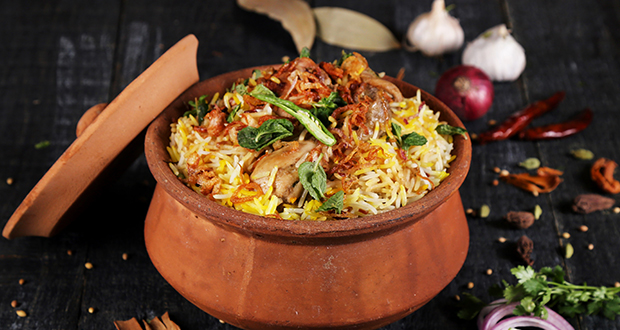

"Unveiling Flavors Through Time: The Epic Saga of Biriyani!"
Biryani, a fragrant and flavorful rice dish, has its roots in ancient Persia. Introduced to the Indian subcontinent by Mughal emperors in the 16th century, it evolved into regional variations. Hyderabadi, Lucknowi, and Kolkata biryanis are notable. Biryani combines aromatic rice with meat or vegetables, often seasoned with a blend of spices, creating a beloved and diverse culinary tradition cherished across India and beyond.
"Bringing Biriyani to your kitchen"
Hyderabadi Dum Biryani is a delicious and aromatic Indian rice dish that combines marinated meat, fragrant rice, and a blend of spices. It's cooked in a traditional dum style, where the pot is sealed to trap steam and flavors, resulting in a flavorful and tender biryani.
Here's a recipe for Hyderabadi Dum Biryani:
Elevate Your Dish with Exceptional Ingredients
For Marinating the Meat:
1. 500 grams of bone-in chicken, mutton, or lamb (you can also use vegetables like potatoes, if preferred)
2. 1 cup thick yogurt
3. 1 tablespoon ginger-garlic paste
4. 1 tablespoon red chili powder
5. 1/2 teaspoon turmeric powder
6. 1 teaspoon garam masala powder
7. Salt to taste
8. Juice of one lemon
9. 2 tablespoons cooking oil
For the Rice:
1. 2 cups Basmati rice
2. Water for soaking the rice
3. Salt for boiling the rice
4. Whole spices (2-3 cloves, 2-3 green cardamom pods, 1-inch cinnamon stick)
For Assembling:
1. 2 large onions, thinly sliced
2. 2-3 green chilies, slit
3. A handful of fresh coriander leaves, chopped
4. A handful of fresh mint leaves, chopped
5. 2-3 tablespoons ghee (clarified butter)
6. Saffron strands soaked in 2 tablespoons of warm milk (optional)
Whole Spices and Powders:
1. 2-3 green cardamom pods
2. 2-3 cloves
3. 1-inch cinnamon stick
4. 1 bay leaf
5. 1/2 teaspoon shah jeera (black cumin seeds)
6. 1/2 teaspoon garam masala powder
Let's chop, simmer, and sauté our way to gastronomic glory!
Marinating the Meat:
1. In a large mixing bowl, combine the meat, yogurt, ginger-garlic paste, red chili powder, turmeric powder, garam masala powder, salt, lemon juice, and cooking oil. Mix well to coat the meat evenly. Allow it to marinate for at least 1-2 hours, or overnight in the refrigerator for best results.
Cooking the Rice:
1. Wash the basmati rice thoroughly and soak it in water for about 30 minutes. Drain the rice.
2. In a large pot, bring water to a boil. Add the drained rice, salt, and the whole spices (cloves, cardamom, and cinnamon).
3. Cook the rice until it's about 70-80% cooked (it should still have a slight bite to it). Drain the rice and set it aside.
Assembling the Biryani:
1. In a heavy-bottomed and wide pan or biryani pot, add 2-3 tablespoons of ghee and spread it evenly on the bottom.
2. Layer half of the partially cooked rice over the ghee.
3. Add the marinated meat as the next layer, spreading it evenly.
4. Sprinkle half of the chopped mint, coriander leaves, green chilies, saffron milk (if using), and garam masala powder over the meat.
5. Layer the remaining rice over the meat.
6. Top it with the remaining mint, coriander leaves, green chilies, and saffron milk.
7. Cover the pot with a tight-fitting lid or seal it with dough to ensure no steam escapes.
Dum Cooking:
1. Place the biryani pot on low heat and let it cook on dum (steaming) for about 30-40 minutes. You can also place a tava (griddle) under the pot to ensure even cooking.
2. Once done, turn off the heat and let it sit for 10-15 minutes before opening the lid.
3. Gently fluff the biryani with a fork, taking care not to break the rice grains or meat pieces.
4. Serve hot with raita or salad on the side.
Enjoy your delicious Hyderabadi Dum Biryani!